| TODO: this page is WIP
before being finished it will be a mess (See: To-Do List) |
Contents
Introduction
From the introductory explanation to XML formatting, a more detailed description of the setup commands is required.
The setup commands help formatting as far as they provide the XML selections to be formatted with standard ConTeXt commands.
A very basic setup configuration would be:
\startxmlsetups xml:emphasis \bgroup\em\xmltext{#1}{.}\egroup \stopxmlsetups
The only XML setup command above is \xmltext. Both \em and \bgroup … \egroup are standard ConTeXt commands.
This page describes only setup commands for XML in ConTeXt.
Flushing Text and Elements
\xmlflush
\xmlflush is the most basic setup command, since it includes all XML from the current node (text and children elements with their attributes).
Imagine the following XML sample:
<text> <paragraph class="first"> <sentence>This is the first sentence.</sentence> <sentence>This is the second sentence.</sentence> </paragraph> <paragraph class="second"> <sentence>This is the third sentence.</sentence> <sentence>This is the fourth sentence.</sentence> </paragraph> </text>
Given the following environment:
\startxmlsetups xml:sample \xmlsetsetup{#1}{*}{xml:*} \xmlsetsetup{#1} {paragraph[@class='second']} {xml:second:paragraph} \stopxmlsetups \xmlregistersetup{xml:sample} \startxmlsetups xml:text \xmlflush{#1} \stopxmlsetups \startxmlsetups xml:paragraph \xmlflush{#1} \stopxmlsetups \startxmlsetups xml:sentence \xmlflush{#1} \stopxmlsetups \startxmlsetups xml:second:paragraph % this is empty (no flush for children) \stopxmlsetups
The result would be:
- 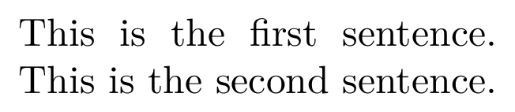
You might wonder Why the third and fourth sentences are missing.
They are not typeset because the path for the second paragraph is missing a flushing that would reach the <sentence> elements that element contains.
Replacing the comment with \xmlflush{#1} would typeset the second paragraph.
\xmlflushcontext
\xmlflushcontext also flushes text and children elements, but it also interprets ConTeXt commands.
Sample code:
<text> <paragraph>\ConTeXt\ is awesome.</paragraph> <paragraph class="second">\ConTeXt\ is also a command.</paragraph> </text>
Sample environment that shows the difference:
\startxmlsetups xml:text \xmlflush{#1} \stopxmlsetups \startxmlsetups xml:paragraph \startparagraph \xmlflush{#1} \stopparagraph \stopxmlsetups \startxmlsetups xml:second:paragraph \startparagraph \xmlflushcontext{#1} \stopparagraph \stopxmlsetups
Only the second paragraph has ConTeXt typeset following the command:
- 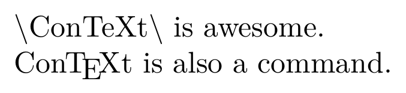
\xmlflushtext
\xmlflushtext flushes all text from the current node.
This includes
Taking the sample code above and only replacing the xml:text setup command such as in:
\startxmlsetups xml:text \xmlflushtext{#1} \stopxmlsetups
This is the output:
- 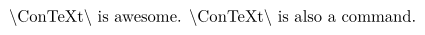
No ConTeXt command interpretation, as expected.
Also no paragraph, since \xmlflushtext includes text from all children elements, but not the children themselves.
In that way, the setup commands xml:paragraph and xml:second:paragraph in the sample have nothing to deal with.
\xmlpure
\xmlpure is needed to pass pure text (without extra codes) to PDF comments or similar.
Here is the XML sample:
<text> <sentence>Code may be tricky.</sentence> <code>\ConTeXt\ code.</code> </text>
The relevant setup command that shows the difference:
\startxmlsetups xml:code \xmlflushcontext{#1}\par standard flushing\comment{\xmlflush{#1}}\\ pure flushing\comment{\xmlpure{#1}} \stopxmlsetups
Being a PDF interactive feature, the result cannot be displayed on the wiki:[1]
- 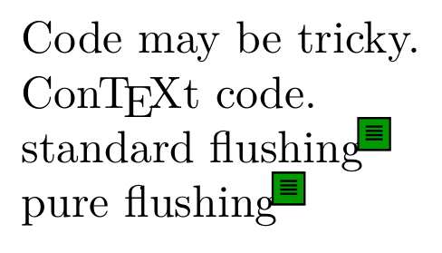
Standard flushing (with \xmlflush) gives the text from the PDF comment: \Ux {5C}ConTeXt\Ux {5C} code.
Pure flushing (with \xmlpure) gives the text from that comment: \ConTeXt\ code.
\xmlpure accepts a path as an optional second argument.
This would make \xmlpure{#1} and \xmlpure{#1}{.} (or even \xmlpure{#1}{../code} in that sample) synonymous commands.
Attributes
\xmlatt
\xmlatt gives the value of a given attribute.
A minimal sample:
<text> <element class="single">text</element> </text>
The setup to output the attribute value would read:
\startxmlsetups xml:element \xmlatt{#1}{class} \stopxmlsetups
So the output would read:
- 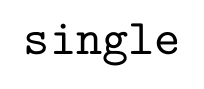
\xmlrefatt
\xmlrefatt gives the value of an attribute, but it removes leading # from its value.
A minimal sample with destination:
<text> <section id="section-1">Section 1 <p>Irrelevant text.</p> </section> <section id="section-2">Section 2 <p>As said in <a href="#section-1">previous section</a>…</p> </section> </text>
The setup to read the output as a destination for a ConTeXt reference:
\startxmlsetups xml:a \in{section}[\xmlrefatt{#1}{href}] \stopxmlsetups
So the output would read (link interaction enabled to see the difference):
- 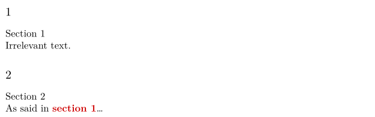
\xmlattdef
\xmlattdef gives the value of a given attribute or a text if the attribute doesn’t exist.
Taking the first XML sample from Attributes, the following setup will warn about the not available attribute:
\startxmlsetups xml:element \xmlattdef{#1}{id}{no defined id attribute} \stopxmlsetups
This setup would output:
- 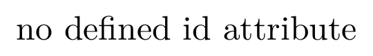
There is no way to format the warning string (no defined id attribute in this case). Conditionals would be needed for that.
Verbatim Text
There are four basic commands to get verbatim text: \xmlverbatim, \inlinexmlverbatim, \xmlprettyprint and \xmlinlineprettyprint.
The inline versions display inline code and the pretty versions highlight the displayed code.
All verbatim cannot specify paths (they are limited to the contents of the current element).
Let’s take XML and enviroment samples from \xmlflush.
Only the setup for xml:text is replaced with:
\startxmlsetups xml:text block: \xmlverbatim{#1}\blank inline: \xmlinlineverbatim{#1}\blank block: \xmlprettyprint{#1}{xml}\blank inline: \xmlinlineprettyprint{#1}{xml}\blank \stopxmlsetups
The output would be:[2]
- 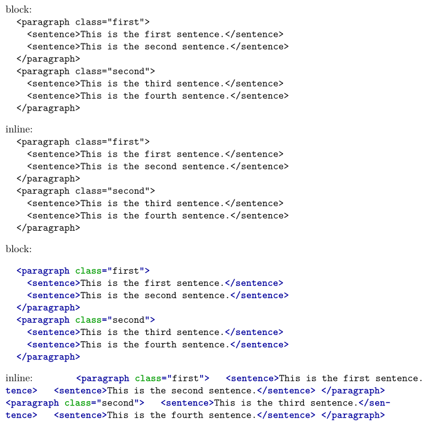
Setups for xml:paragraph and xml:sentence haven’t been removed.
But they don’t have anything to deal with, as none of the verbatim commands flushes elements.
Conditionals
There are four basic XML conditional commands:
All four have the ifnot and ifelse variants. Only the main if commands are explained (and variants shown in results).
\xmldoif
\xmldoif checks if a given element exists (as defined by a path). It only requires that a path that can be selected.
Taking the XML sample from \xmlflush and replacing the xml:element setup configuration with:
\startxmlsetups xml:text paragraph: \xmldoif{#1}{paragraph}{exists}\\ sentence: \xmldoifelse{#1}{paragraph/sentence}{exists}{not available}\\ sentence: \xmldoifnot{#1}{/sentence}{not available} \stopxmlsetups
This is the result from that configuration setup:
Please, keep in mind the following considerations from this sample:
- There is no flushing at all, only a requirement checking and consequent code when any defined criterion is met.
-
<paragraph>is child (or direct descendant) from<text>, but<sentence>is only indirect descendant. -
The path selection
/sentencewas written as a child purposefully to get a negative conditional. -
It would be pointless to set
.(the current node) as path. If the node has already been reached, the condition will always be true.
\xmldoiftext
\xmldoiftext checks if a given element (as selected by a path) contains text.
Text is understood here as text content in XML element and not what gives width (such as in ConTeXt command \doiftextelse{\hskip0pt}{text}{no text}).
A very basic XML sample:
<text> <paragraph> <sentence>Just a sentence.</sentence> <sentence> </sentence> <sentence>#113826;</sentence> <sentence></sentence> </paragraph> </text>
These are the conditionals for the setup of xml:text:
\startxmlsetups xml:text paragraph: \xmldoiftext{#1}{paragraph}{text given}\\ sentence: \xmldoifelsetext{#1}{sentence}{text given}{no text}\\ first sentence: \xmldoifelsetext{#1}{sentence[position()==1]}{text given}{no text}\\ sentence 2: \xmldoifelsetext{#1}{sentence[position()==2]}{text given}{no text}\\ sentence 3: \xmldoifelsetext{#1}{sentence[position()==3]}{text given}{no text}\\ last sentence: \xmldoifelsetext{#1}{sentence[position()==last()]}{text given}{no text} \stopxmlsetups
The results would be:
- 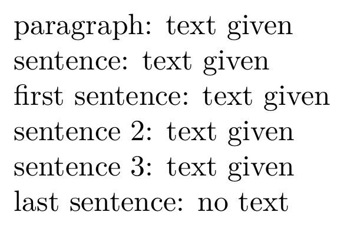
You have to keep in mind:
-
Spaces count as text for conditionals (no matter its width [
𛲢is zero–width space]). - If not specified, conditional is performed with the first match.
- Elements have text when their descendants have it.
\xmldoifempty
\xmldoifempty gives the opposite results from \xmldoiftext.
Having the previous XML sample and replacing the setup for xml:text with:
\startxmlsetups xml:text paragraph: \xmldoifelseempty{#1}{paragraph}{empty}{full}\\ sentence: \xmldoifelseempty{#1}{sentence}{empty}{full}\\ first sentence: \xmldoifelseempty{#1}{sentence[position()==1]}{empty}{full}\\ sentence 2: \xmldoifelseempty{#1}{sentence[position()==2]}{empty}{full}\\ sentence 3: \xmldoifelseempty{#1}{sentence[position()==3]}{empty}{full}\\ last sentence: \xmldoifelseempty{#1}{sentence[position()==last()]}{empty}{full} \stopxmlsetups
Results are:
- 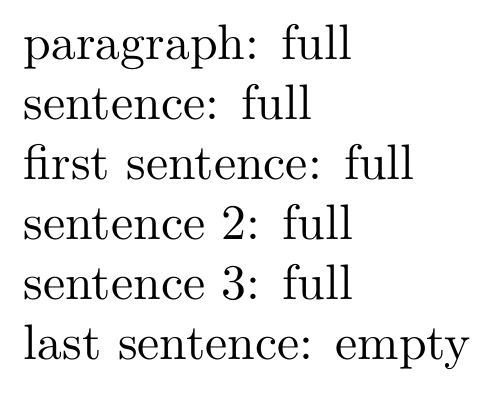
\xmldoifselfempty
There is a self version of \xmldoifempty, named \xmldoifselfempty (provided with ifnot and ifelse variants, as well).
It checks from emptiness in current node (no path selection). \xmldoifselfempty{#1}{empty} is the same as \xmldoifempty{#1}{.}{empty}.
It may be just me, but code readability is problematic \xmldoifselfelseempty (instead of just \xmldoifelseempty).
\xmldoifatt
- 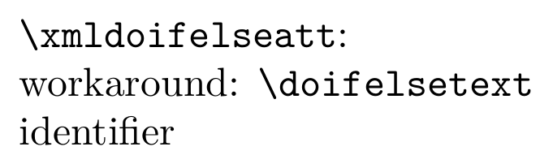
-
↑
You need to compile the sources and inspect the PDF output.
The wiki only displays images taken from the PDF output.
\setupinteraction[state=start] \startbuffer[demo] <text> <sentence>Code may be tricky.</sentence> <code>\ConTeXt\ code.</code> </text> \stopbuffer \startxmlsetups xml:sample \xmlsetsetup{#1}{*}{xml:*} \stopxmlsetups \xmlregistersetup{xml:sample} \startxmlsetups xml:text \xmlflush{#1} \stopxmlsetups \startxmlsetups xml:sentence \startparagraph \xmlflush{#1} \stopparagraph \stopxmlsetups \startxmlsetups xml:code \xmlflushcontext{#1}\par standard flushing\comment{\xmlflush{#1}}\\ pure flushing\comment{\xmlpure{#1}} \stopxmlsetups \setupbodyfont[24pt] \startTEXpage[offset=1ex] \xmlprocessbuffer{main}{demo}{} \stopTEXpage
-
↑
\xmlinlineverbatim
seems to have a bug (in both the wiki and latest from 2024.06.14 09:18).
\xmlinlineprettyprint {#1}{none } achieves the same result (no code highlighting).